소음진동기사(구) (2018-09-15 기출문제)
1과목: 소음진동개론
1. 다음은 공해진동의 신체적 영향이다. ( ) 안에 가장 적합한 것은?
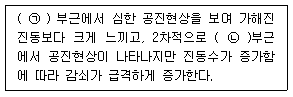
- ㉠ 1~2Hz, ㉡ 10~20Hz
- ㉠ 3~6Hz, ㉡ 10~20Hz
- ㉠ 1~2Hz, ㉡ 20~30Hz
- ㉠ 3~6Hz, ㉡ 20~30Hz
(정답률: 53%)

2. 낮시간 동안의 매시간 등가소음도가 68dB(A), 밤시간 동안의 매시간 등가소음도가 55dB(A) 라 할 때 주야간 평균소음도(Ldn)는? (단, 밤시간은 9시간)
- 60 dB(A)
- 62 dB(A)
- 64 dB(A)
- 67 dB(A)
(정답률: 58%)
3. 점음원인 경우, 거리가 2배 멀어질 때마다 소음 감쇠치에 대한 일반적인 설명으로 옳은 것은?
- 음압레벨이 3dB씩 감쇠된다.
- 음압레벨이 4dB씩 감쇠된다.
- 음압레벨이 6dB씩 감쇠된다.
- 음압레벨이 9dB씩 감쇠된다.
(정답률: 80%)
4. 진동수 16Hz, 진동의 속도 진폭이 0.0002m/s인 정현진동의 가속도진폭(m/s2)및 가속도레벨(dB)은? (단, 가속도 실효치 기준 10-5 m/s2)
- 0.01m/s2, 57dB
- 0.02m/s2, 63dB
- 0.03m/s2, 67dB
- 0.04m/s2, 63dB
(정답률: 69%)
5. PWL 80dB인 기계 10대를 동시에 가동하면 몇 dB의 PWL을 갖는 기계 1대를 가동시키는 것과 같은가?
- 86dB
- 90dB
- 93dB
- 95dB
(정답률: 74%)
6. 다음 소음용어에 관한 설명 중 옳지 않은 것은?
- WECPNL - 항공기소음의 평가레벨
- SPL - 음압레벨
- phon - 음의크기 레벨
- sone - 음의 세기레벨
(정답률: 78%)
7. 바다면적이 500m2 이고 천장높이가 3.2m인 교실이 있다. 이 교실 바닥 면적이 받는 공기압력의 크기는? (단, 공기 밀도 1.25kg/m3)
- 31.24 Pa
- 39.20 Pa
- 49.00 Pa
- 61.25 Pa
(정답률: 53%)
8. 사람의 청각기관 중 중이에 관한 설명으로 옳지 않은 것은?
- 음의 전달 매질은 기체이다.
- 망치뼈, 모루뼈, 등자뼈 라는 3개의 뼈를 담고 있는 고실과 유스타키오관으로 이루어진다.
- 고실의 넓이는 약 1~2cm2 정도이다.
- 이소골은 진동음압을 20배 정도 증폭하는 임피던스 변환기 역할을 한다.
(정답률: 73%)
9. 음의 세기(강도)에 관한 설명으로 틀린 것은?
- 음의 세기는 입자속도에 비례한다.
- 음의 세기는 음압의 2승에 비례한다.
- 음의 세기는 음향임피던스에 반비례한다.
- 음의 세기는 전파속도의 2승에 반비례한다.
(정답률: 63%)
10. 고유음향 임피던스가 각각 Z1, Z2인 두 매질의 경계면에 수직으로 입사하는 음파의 투과율은?
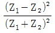
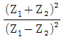
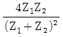
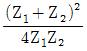
(정답률: 70%)
11. 중심주파수가 2500Hz 일 때 1/3 옥타브밴드 분석기의 밴드폭은?
- 1865Hz
- 1768Hz
- 775Hz
- 580Hz
(정답률: 67%)
12. 음압실효치가 8×10-1 N/m2 인 평면파의 음세기는 W/m2 인가? (단, 공기온도 15℃ 공기밀도 1.2kg/m3)
- 1.6×10-3
- 2.3×10-2
- 4.7×10-3
- 8.0×10-2
(정답률: 69%)
13. 아래의 명료도 산출식에 관한 다음 설명 중 옳지 않은 것은?
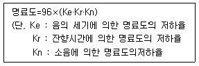
- 음의 세기에 의한 명료도는 음압레벨이 40dB에서 가장 잘 들리고 40dB 이상에서는 급격히 저하된다.
- 잔향시간이 길면 언어의 명료도가 저하된다.
- 상수 96은 완전한 실내 환경에서 96%가 최대 명료도임을 뜻하는 값이다.
- 소음에 의한 명료도는 음압레벨과 소음레벨이 차이가 0dB일 때 Kn 값은 0.67이며, 이 Kn은 두 음의 차이가 커짐에 따라 증가한다.
(정답률: 45%)
14. 항공기 소음을 소음계의 D특성으로 측정한 값이 97dB(D) 이다. 감각소음도 (Perceived Noise Level)는 대략 몇 PN-dB 인가?
- 104
- 116
- 132
- 154
(정답률: 62%)
15. 출력 15W의 작은 점음원이 단단하고 평탄한 지면위에 있는 경우, 음원으로부터 10m 떨어진 지점에서의 음의 세기는?
- 0.012 W/m2
- 0.024 W/m2
- 0.0239 W/m2
- 0.477 W/m2
(정답률: 46%)
16. 공해진동 크기의 표현으로 옳은 것은? (단, VAL : 진동가속도레벨, VL : 진동레벨, Wn : 주파수 대역별 인체감각에 대한 보정치)
- VL = VAL × Wn
- VAL = VL × Wn
- VL = VAL + Wn
- Wn = VAL + VL
(정답률: 67%)
17. 다음 중 무지향성 점음원이 반자유공간에 있을 때 음압레벨(SPL) 산출식으로 옳은 것은? (단, PWL은 음향파워레벨, r은 거리)
- SPL = PWL - 10 log r - 5dB
- SPL = PWL - 10 log r - 8dB
- SPL = PWL - 20 log r - 11dB
- SPL = PWL - 20 log r - 8dB
(정답률: 67%)
18. 다음은 인체의 청각기관에 관한 설명이다. ( )안에 알맞은 것은?
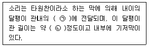
- ㉠ 기체, ㉡ 33㎜
- ㉠ 기체, ㉡ 66㎜
- ㉠ 액체, ㉡ 33㎜
- ㉠ 액체, ㉡ 66㎜
(정답률: 57%)
19. 53phon과 같은 크기를 갖는 음은 몇 sone 인가?
- 0.65
- 0.94
- 1.52
- 2.46
(정답률: 68%)
20. 진동감각에 관한 다음 설명 중 옳지 않은 것은?
- 사람이 느끼는 최소 진동역치는 55±5dB 정도이다.
- 수직방향과 수평방향에 따라 진동의 느낌이 차이가 난다.
- 진동수가 증가함에 따라 감쇠가 급격히 줄어들어 공진현상이 심화된다.
- 공진현상은 앉아 있을 때가 서 있을 때보다 심하게 나타난다.
(정답률: 72%)
2과목: 소음방지기술
21. 음압레벨 130dB의 음파가 면적 6m2의 창을 통과할 때 음파의 에너지는 몇 W 인가?
- 0.6W
- 6W
- 60W
- 600W
(정답률: 40%)
22. 다음 중 흡음에 관한 설명으로 옳지 않은 것은?
- glass wool, rock wool 등은 고음역에서 흡음성이 좋다.
- 판진 등 흡음은 대게 1000~2000Hz 부근에서 최대흡음율 0.7~0.8을 지니며, 판이 두껍거나 배후 공기층이 클수록 고음역으로 이동한다.
- 유공보드의 경우 배후에 공기층을 두어 시공하면 공기층이 상당히 두꺼운 경우를 제외하고 일반적으로는 어느 주파수 영역을 중심으로 한 산형(山形)의 흡음특성을 보인다.
- 다공질형 흡음재는 음에너지를 운동에너지로 바꾸어 열에너지로 전환한다.
(정답률: 58%)
23. 길이가 40m, 폭 20m, 높이 4m인 주차장이 있다. 이 주차장 내에서의 잔향시간이 2.0초일 때 잔향시간 측정법에 의한 이 주차장의 평균 흡음율은 약 얼마인가?
- 0.03
- 0.08
- 0.12
- 0.19
(정답률: 55%)
24. 작업장 내에 95dB의 소음을 발생시키는 기계가 2대, 90dB의 소음을 발생시키는 기계가 1대 있다. 만약, 작업장의 소음허용치가 96dB라면 이 허용치를 만족시키기 위해 저감시켜야 할 최소 소음은 약 몇 dB인가? )단, 배경소음은 무시한다.)
- 0dB
- 1.5dB
- 2.7dB
- 5.6dB
(정답률: 56%)
25. 공장 내 두 벽과 바닥이 만나는 모서리에 90dB의 소음을 유발하는 공기압축기가 있다. 이 공장의 내부체적은 200m3, 실내 전표면적은 220m2, 실내 평균흡음율은 0.4일 때 공장내에서 직접음과 잔향음이 같은 지점은 공기압축기로부터 얼마나 떨어져 있는가? (단, 공장 내 소음원은 공기압축기 1대로 가정 한다.)
- 2.1m
- 4.8m
- 9.0m
- 11.5m
(정답률: 50%)
26. 기계 장치를 취출구 소음을 줄이기 위한 대책으로 거리가 먼 것은?
- 취출구의 유속을 감소시킨다.
- 취출구 부위를 방음상자로 밀폐 처리한다.
- 취출관의 내면을 흡음 처리한다.
- 취출구에 소음기를 장착한다.
(정답률: 55%)
27. 정상청력을 가진 사람이 1000Hz에서 가청할 수 있는 최소음압실효치가 2×10-5 N/m2일 때, 어떤 대상음압 레벨이 96dB 였다면 이 대상음의 음압실효치(N/m2)는?
- 0.76 N/m2
- 1.26 N/m2
- 8.4 N/m2
- 18.0 N/m2
(정답률: 57%)
28. 중심주파수 250Hz부터 10dB 이상의 소음을 차단할 수 있는 방음벽을 설계하려고 한다. 음원에서 수음점까지의 음의 희절경로와 직접경로 간의 경로차가 0.45m 이면 중심주파수 250Hz에서의 Fresnel Number는? (단, 음속은 340m/s)
- 0.43
- 0.66
- 0.85
- 0.97
(정답률: 55%)
29. 벽체 외부로부터 확산음이 입사될 때 이 확산음의 음압레벨은 115dB 이다. 실내의 흡음력은 35m2 이고, 벽의 투과손실이 33dB, 벽의 면적이 22m2 일 경우 실내의 음압레벨은?
- 66dB
- 69dB
- 74dB
- 86dB
(정답률: 55%)
30. 방음벽에 대한 설명으로 가장 거리가 먼 것은?
- 방음벽의 설치는 교통소음의 영향을 크게 받는 지역으로 인구밀도가 높고, 소음기준을 크게 초과하는 곳부터 우선하여 설치한다.
- 방음벽에 의해 얻을 수 있는 감음량은 대략 35dB이상이다.
- 방음벽은 도로변의 지반상태를 감안하여 안전한 위치에 설치하여야 한다.
- 수음점에서 음원으로의 가시선을 차단하지 않으면 감음 효과가 거의 없다.
(정답률: 59%)
31. 음향투과등급(sound transmission class : STC)은 1/3 옥타브대역으로 측정한 자음자재의 투과손실을 나타 낸 것인데, 다음 중 음향투과등급을 평가하는 방법으로 옳지 않은 것은?
- 음향투과등급은 기준곡선을 상하로 조정하여 결정한다.
- 모든 주파수 대역별 투과손실과 기준곡선값의 차의 산술평균이 2dB 이내가 되도록 한다.
- 단 하나의 투과손실값도 기준곡선 밑으로 5dB을 초과해서는 안된다.
- 음향투과등급은 기준곡선과의 조정을 거친 후 500Hz를 지나는 STC곡선의 값을 판독하면 된다.
(정답률: 58%)
32. 크기가 5m×4m이고 투과손실이 40dB인 벽체에 서류를 주고 받기 위한 개구부를 설치하려고 한다. 이 때 이 벽체의 총합 투과손실을 20dB 정도로 유지하기 위해서는 개구부의 크기를 약 얼마 정도를 해야 하는가?
- 약 0.⑤m2
- 약 0.2m2
- 약 0.5m2
- 약 0.55m2
(정답률: 60%)
33. 균질의 단일벽에서 음파가 벽면에 난입사 할 때의 실용식으로 알맞은 것은? (단, f : 입사되는 주파수(Hz), M : 벽의 면밀도(kg/m2))
- TL = 10log(f·M) - 44
- TL = 10log(f·M) + 44
- TL = 18log(f·M) - 44
- TL = 18log(f·M) + 44
(정답률: 53%)
34. 소음원에 소음기를 부착하기 전과 후의 공간상 어떤 특정위치에서 측정한 음압레벨의 차와 그 측정위치로 정의되는 것으로 가장 적합한 것은?
- 동적 삽입손실치(DIL)
- 투과손실(TL)
- 삽입손실치(IL)
- 감음량(NR)
(정답률: 56%)
35. 다음 설명에 해당하는 소음기로 가장 적합한 것은?
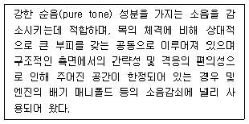
- 단순 팽창형 소음기
- 헬름홀쯔 공명기
- 역류형 소음기
- 측지 공명기
(정답률: 60%)
36. 다음 ( ) 안에 알맞은 것은?
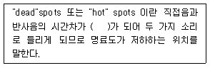
- 0.⑤초
- 1초
- 5초
- 15초
(정답률: 45%)
37. 판넬이 떨려 발생하는 소음을 방지하는데 가장 적합한 자재로서 공기전파음에 의해 발생하는 공진진폭의 저감과 판넬 가장자리나 구성요소 접속부의 진동에너지 전달의 저감에 사용되는 것은?
- 흡음재
- 차음재
- 제진제
- 차진제
(정답률: 32%)
38. 방음대책을 음원대책과 전파경로대책으로 분류할 때 다음 중 음원대책에 해당하는 것은?
- 공장건물 내벽의 흡음처리
- 방음벽 설치
- 거리감쇠
- 방사율의 저감
(정답률: 48%)
39. 단일벽의 차음특성은 주파수에 따라 3개의 영역으로 구분된다. 다음 중 이 차음특성에 대한 설명으로 거리가 먼 것은?
- 저주파 대역에서는 자재의 강성에 의한 공진영역이 나타난다.
- 질량법칙이 만족되는 영역에서는 투과손실이 옥타브당 6dB씩 증가한다.
- 질량법칙에 의한 차음 특성은 벽체의 면밀도 혹은 벽체에 입사되는 주파수가 증가할수록 투과손실이 크다.
- 일치효과영역에서 입사각(θ) 90°일 때, 일치주파수가 최대로 되며, 이 주파수보다 높은 주파수에서는 일치효과가 발생하지 않는다.
(정답률: 43%)
40. 공조기에서 발생되는 소음을 감쇠시키기 위해 그림과 같은 단면의 소음기를 3.5m 길이로 설치할 경우 500Hz에서의 감음량은 몇 dB 인가? (단, 잔향실법에 의한 흡음율은 0.55 이다.)
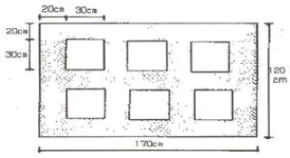
- 16dB
- 19dB
- 21dB
- 24dB
(정답률: 61%)
3과목: 소음진동 공정시험 기준
41. 주간시대에 A지점에서 2시간 간격을 두고 1시간씩 2회 측정한 철도소음도가 64dB(A)과 74dB(A)이었다면 A지점에서의 철도소음도는 얼마인가?
- 65dB(A)
- 69.5dB(A)
- 74dB(A)
- 79.5dB(A)
(정답률: 60%)
42. 다음 중 주파수 특성이 매우 종고, 감도가 높으며, 전동기, 변압기 등의 주변에서 소음을 측정하고자 할 때 가장 적합한 마이크로폰은?
- 자기형
- 다이나믹형
- 크리스탈형
- 콘덴서형
(정답률: 62%)
43. 진동배출원 부지경계선의 측정진동레벨이 배경진동레벨보다 1dB(V) 클 때에 관한 설명으로 가장 적합한 것은?
- 배경진동이 대상진동보다 크므로 재측정하여 대상진동레벨을 구한다.
- 대상진동레벨은 측정진동레벨보다 1dB(v) 낮다.
- 대상진동레벨은 측정진동레벨보다 1dB(v) 높다.
- 대상진동레벨은 측정진동레벨보다 5dB(v) 높다.
(정답률: 60%)
44. 다음은 소음의 환경기준 측정방법 중 측정조건에 관한 설명이다. ( )안에 알맞은 것은?
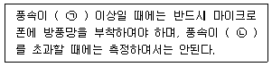
- ㉠ 1m/sec, ㉡ 3m/sec
- ㉠ 2m/sec, ㉡ 3m/sec
- ㉠ 1m/sec, ㉡ 5m/sec
- ㉠ 2m/sec, ㉡ 5m/sec
(정답률: 64%)
45. 발파소음측정에 관한 설명으로 옳지 않는 것은?
- 측정점은 피해가 예상되는 자의 부지경계선 중 소음도가 높을 것으로 예상되는 지점에서 지면 위 0.5~1.0m 높이로 한다.
- 측정소음도는 발파소음이 지속되는 기간 동안에 측정하여야 한다.
- 소음도 기록기를 사용할 때에는 기록지상의 지시치의 최고치를 측정소음도로 한다.
- 최고소음 고정용 소음계를 사용할 때에는 당해 지시치를 측정소음도로 한다.
(정답률: 56%)
46. 다음은 규제기준 중 동일건물 내 사업장소음측정을 위한 측정시간 및 측정지점수 기준이다. ( ) 안에 가장 적합한 것은?
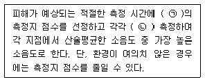
- ㉠ 2지점 이상, ㉡ 2회 이상
- ㉠ 2지점 이상, ㉡ 4회 이상
- ㉠ 4지점 이상, ㉡ 2회 이상
- ㉠ 4지점 이상, ㉡ 4회 이상
(정답률: 45%)
47. 소음 · 진동 공정시험기준에서 정하는 용어의 정의로 옳지 않은 것은?
- 반사음은 한 매질 중의 음파가 다른 매질의 경계면에 입사한 후 진행방향을 변경하여 본래의 매질 중으로 되돌아오는 음을 말한다.
- 지발(遲發) 발파는 시간차를 두지 않고 발파하는 것을 말한다. 단, 발파기를 1회 사용하는 것에 한한다.
- 소음도는 소음계의 청감조어회로를 통하여 측정한 지시치를 말한다.
- 배경소음도는 측정소음도의 측정위치에서 대상소음이 없을 때, 소음·진동 공정시험기준에서 정한 측정방법으로 측정 한 소음도 및 등가소음도 등을 말한다.
(정답률: 50%)
48. 소음계의 청감보정희로로 A 보정레벨을 사용하는 이유로 가장 적합한 것은?
- 측정치의 정확성을 기하기 위하여
- 측정치의 통계처리가 용이하기 때문에
- 전 주파수 대역에서 평탄한 특성을 가지기 때문에
- 인체의 청감각과 잘 대응하기 때문에
(정답률: 64%)
49. 발파진동 측정시 디지털 진동자동분석계를 사용하여 측정진동레벨을 분석할 때 샘플주기는 최대 얼마 이하로 해야 하는가?
- 0.1초
- 0.5초
- 1.0초
- 5초
(정답률: 39%)
50. 규제기준 중 발파소음 측정평가 시 대상소음도에 시간대별 보정발파횟수에 따른 정량을 보정하여 평가소음도를 구하는데, 지발발파의 경우는 보정발파횟수를 몇 회로 간주하는가?
- 1회
- 3회
- 5회
- 10회
(정답률: 64%)
51. 다음 중 진동레벨계의 구성 요소가 아닌 것은?
- 진동픽업
- 레벨레인지 변환기
- 특성조절기
- 감각보정회로
(정답률: 55%)
52. 도로교통소음관리기준 측정방법으로 옳지 않은 것은?
- 요일별로 소음변동이 적은 평일(월요일부터 금요일사이)에 당해지역이 도로교통소음을 측정하여야 한다.
- 당해지역 도로교통소음을 대표할 수 있는 시각에 4개 이상의 측정지점수를 선정하여 각 측정지점에서 2시간 이상간격을 4회 이상 측정하여 산술평균한 값을 측정소음도로 한다.
- 디지털 소음자동분석계를 사용할 경우 샘플주기를 1초 이내에서 결정하고 10분 이상 측정하여 자동 연산·기록한 등가소음도를 그 지점의 측정소음도로 한다.
- 측정자료는 계산과정에서는 소수점 첫째자리를 유효숫자로 하고, 측정소음도(최종값)는 소수점 첫째자리에서 반올림 한다.
(정답률: 45%)
53. 다음은 L10진동레벨 계산 방법이다. ( )안에 알맞은 것은?
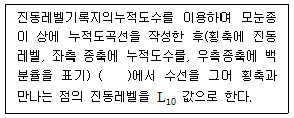
- 10% 횡선이 누적도곡선과 만나는 교점
- 50% 횡선이 누적도곡선과 만나는 교점
- 80% 횡선이 누적도곡선과 만나는 교점
- 90% 횡선이 누적도곡선과 만나는 교점
(정답률: 48%)
54. 표준음 발생기에 관한 다음 설명 중 ( )안에 알맞은 것은?
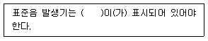
- 발생음의 주파수와 음압도
- 표준음의 종류와 음향파워레벨
- 표준음의 종류와 음의 투과도
- 음향파워레벨과 음의 투과도
(정답률: 64%)
55. 다음 중 넓은 주파수 범위에 걸쳐 평탄특성을 가지며 고감도 및 장기간 운용시 안정하나, 다습한 기후에서 측정시 뒷판에 물이 응축되지 않도록 유의해야 할 마이크로폰은?
- 콘덴서형
- 다이나믹형
- 크리스탈형
- 자기형
(정답률: 64%)
56. 7일간의 항공기 소음의 일별 WECPNL이 85, 87, 69, 77, 82, 83, 80 인 경우 7일간의 평균 WECPNL은?
- 81
- 83
- 85
- 86
(정답률: 53%)
57. 표준음 발생기의 발생음 오차기준으로 옳은 것은?
- ±0.1dB 이내
- ±0.5dB 이내
- ±1dB 이내
- ±5dB 이내
(정답률: 53%)
58. 항공기소음 관리기준 측정방법에서 항공기소음 측정점 선정시 원추형 상부공간이 의미하는 것은?
- 정위치를 지나는 지면 또는 바닥면의 법선에 반각 80°의 선분이 지나는 공간을 말한다.
- 정위치를 지나는 지면 또는 바닥면의 법선에 반각 60°의 선분이 지나는 공간을 말한다.
- 정위치를 지나는 지면 또는 바닥면의 법선에 반각 45°의 선분이 지나는 공간을 말한다.
- 정위치를 지나는 지면 또는 바닥면의 법선에 반각 30°의 선분이 지나는 공간을 말한다.
(정답률: 55%)
59. 항공기 통과시 1일 최고소음도 측정결과가 각각 99dB(A), 100dB(A), 101dB(A), 102dB(A), 103dB(A), 104dB(A), 1⑤dB(A), 106dB(A), 107dB(A), 108dB(A)이었고, 0시~07시까지 1대, 07~19시까지 6대, 10시~22시까지 2대, 22시~24시까지 1대가 통과할 때 1일 단위의 WECPNL은?
- 92
- 95
- 97
- 99
(정답률: 40%)
60. 소음 측정기기의 구조별 성능에 관한 설명으로 옳지 않은 것은?
- microphone : 지향성이 작은 압력형으로 하며 기기의 본체와 분리가 가능하여야 한다.
- amplifier : 전기에너지를 음향에너지로 변환시킨 양을 증폭시키는 것을 말한다.
- weighting networks : A특성을 갖춘 것이어야 하며, 자동차 소음측정용은 C특성도 함께 갖추어야 한다.
- monitor out : 소음신호를 기록기 등에 전송할 수 있는 교류단자를 갖춘 것이어야 한다.
(정답률: 65%)
4과목: 진동방지기술
61. 무게가 15N인 기계를 방진고무 위에 올려 놓았더니 1.0cm가 수축되었다, 방진고무의 동적배율이 1.2 이라면 방진고무의 동적스프링 정수는?
- 94 N/cm
- 120 N/cm
- 180 N/cm
- 240 N/cm
(정답률: 40%)
62. 전기모터가 1800rpm의 속도로 기계장치를 구동시킨다. 이 시스템은 고무깔개 위에 설치되어 있고 고무깔개는 0.5cm의 정적처짐을 나타내며 고무깔개의 감쇠비는 0.2 이다. 기초에 대한 힘의 전달율을 구하면?
- 약 0.08
- 약 0.11
- 약 0.16
- 약 0.21
(정답률: 30%)
63. 불균형 질량 1kg이 반지름 0.2m의 원주상을 매분 600회로 회전하는 경우 가진력의 최대치는?
- 약 395N
- 약 790N
- 약 1185N
- 약 185N
(정답률: 56%)
64. 운동변위가 다음과 같을 때 진동의 주기는?
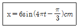
- 0.3초
- 0.5초
- 1.0초
- 1.2초
(정답률: 67%)
65. 다음 방진대책 중 발생원 대책으로 적당하지 않은 것은?
- 가진력 감쇠
- 기초중량의 부가 및 경감
- 동적흡진
- 방진구 설치
(정답률: 56%)
66. 금속스프링의 특징에 관한 설명으로 옳지 않은 것은?
- 환경요소에 대한 저항성이 큰 편이다.
- 로킹(rocking)이 일어나지 않도록 주의해야 한다.
- 최대변위가 허용되며 저주파 차진에 좋다.
- 감쇠능력이 현저하여 공진시 전달율을 최소화 할 수 있다.
(정답률: 45%)
67. 무게가 850N인 기계가 600rpm으로 운전되고 있다. 동일한 스프링 4개를 이용하여 20dB를 방진하려고 할 때, 스프링 1개당 스프링 정수(N/cm)는? (단, 스프링은 병렬연결)
- 55
- 78
- 111
- 125
(정답률: 32%)
68. 일정장력 T로 잡아늘린 현(弦)이 미소횡진동을 하고 있을 때 단위길이당 질량을 p라 하면 전파속 C를 나타낸 식으로 옳은 것은?
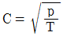
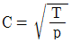
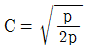
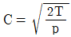
(정답률: 32%)
69. 그림과 같이 단진자가 진동할 때 단진자의 고유진동수와의 관계로 옳은 것은? (단, 단진자의 길이는 l, 질량은 m, θ의 각도로 회전 한다.)
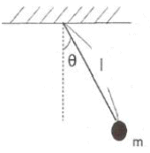
- 고유진동수는 m에 비례
- 고유진동수는 m에 반비례
- 고유진동수는 l의 제곱근에 반비례
- 고유진동수는 l에 반비례
(정답률: 48%)
70. 다음 중 고주파 차진성 및 방음효과가 뛰어나고 부하능력이 광범위하며 자동제어가 가능하나, 압축기 등 부대시설이 필요하고, 구조가 복잡하며 시설비가 많은 것은?
- 공기스프링
- 코일스프링
- 펠트
- 콜크
(정답률: 66%)
71. 강제각진동수와 고유각진동수가 같을 때 진동제어 요소와 응답진폭크기의 연결로 옳은 것은?
- 감쇠, x(ω) = Fo/k
- 스프링의 감성, x(ω) = Fo/(mω2)
- 스프링의 강성, x(ω) = Fo/k
- 감쇠, x(ω) = Fo/(Ceωn)
(정답률: 46%)
72. 자유낙하 하는 물체에 의하여 발생하는 충돌속도는 낙하높이가 2배 높아지면 초기와 비교하여 어떻게 변하는가?
- √2배
- 2배
- 4배
- 9배
(정답률: 53%)
73. 전달율이 1이 되는 경우는? (단, η : 진동수비)
- η=1
- η=√2
- η=1/√2
- η=2
(정답률: 53%)
74. 그림 (a)와 같은 진동계의 스프링을 압축하여 그림 (b)와 같이 만들었다. 압축된 후의 고유진동수는 처음에 비해 어떻게 변하는가? (단, 다른 조건은 변함없다고 가정한다.)
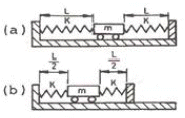
- 2배로 된다.
- √2배로 된다.
- 1/√2배로 된다.
- 변하지 않는다.
(정답률: 56%)
75. 아래 그림은 감쇠비(ξ)가 어떤 범위일 때인가?
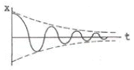
- 0 < ξ < 1
- 0 ≦ ξ ≦ 1
- ξ = 1
- ξ > 1
(정답률: 60%)
76. 차량이 평탄한 노면위를 주행할 때 조향핸들이 그 축에 대한 회전모드로 진동을 수반하는 현상은?
- damping
- lagging
- shimmy
- surging
(정답률: 50%)
77. 진동하는 표면을 고무로 제진 처리하여 90%의 반사율을 얻었다. 이 때 감쇠량은?
- 5 dB
- 10 dB
- 15 dB
- 20 dB
(정답률: 53%)
78. 연속체의진동은 대상체 내의 힘과 모멘트의 평형을 이용하거나 계에 관련되는 변형 및 운동에너지를 활용 하여 운동방정식을 유도하면 통상 2계 또는 4계 편미분방정식으로 되는 경우가 대부분인데, 다음 중 주로 4계 편미분방정식으로 유도되는 것은?
- 판의 진동
- 봉의 종진동
- 봉의 비틀림진동
- 현의 진동
(정답률: 48%)
79. 가진력 저감이 가능한 경우와 거리가 먼 것은?
- 기초를 움직이는 가진력을 감소시키기 위해서는 탄성을 유지한다.
- 왕복운동압축기는 터보형 고속회전압축기 등으로 진동이 작은 기계로 교체한다.
- 필요 시 기계의 설치방향을 바꾼다.
- 크랭크기구를 가진 왕복운동기계는 단수의 실린더를 가진 것으로 교체한다.
(정답률: 55%)
80. X1=4sin 80t, X2=5cos 80t 인 2개 진동이 동시에 일어날 때, 이 합성진동의 최대진폭은 얼마인가? (단, 진폭의 단위는 cm, t는 시간변수이다.)
- 5.0 cm
- 5.8 cm
- 6.4 cm
- 7.0 cm
(정답률: 50%)
5과목: 소음진동 관계 법규
81. 소음진동관리법규상 특별자치시장 등이 폭약의 사용으로 인한 소음진동 피해를 방지할 필요가 있다고 인정하여 지방경찰청장에게 폭약사용을 규제 요청할 때, 포함되어야 할 사항으로 가장 거리가 먼 것은?
- 폭약 사용량
- 폭약 사용시간
- 폭약의 원료
- 발파공법의 개선
(정답률: 62%)
82. 방음시설의 성능 및 설치기준에서 사용하는 용어의 정의 중 ( )안에 가장 적합한 것은?
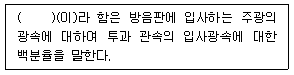
- 삽입손실
- 회절감쇠치
- 가시광선투과율
- 투과손실치
(정답률: 50%)
83. 소음진동관리법상 환경부장관은 소음·진동관리종합계획을 몇 년마다 수립하여야 하는가?
- 1년
- 3년
- 5년
- 10년
(정답률: 57%)
84. 소음진동관리법상 환경기술인의 업무를 방해하거나 환경기술인읜 요청을 정당한 사유 없이 거부한 자에 대한 과태료 부과기준은?
- 100만원 이하의 과태료
- 300만원 이하의 과태료
- 6개월 이하의 징역 또는 500만원 이하의 과태료
- 1년 이하의 징역 또는 1천만원 이하의 과태료
(정답률: 50%)
85. 소음진동관리법규상 이동소음원의 규제에 따른 이동소음원의 종류와 거리가 먼 것은? (단, 그 밖의 사항 등은 제외)
- 저공으로 비행하는 항공기
- 이동하며 영업을 하기 위하여 사용하는 확성기
- 행락객이 사용하는 음향기계
- 소음방지장치가 비정상이거나 음향장치를 부착하여 운행하는 이륜자동차
(정답률: 56%)
86. 소음진동관리법규상 현재 제작되는 자동차의 소음허용기준 설정항목(소음항목)으로만 모두 옳게 나열된 것은? (단, 2006년 1월 1일 이후에 제작되는 자동차)
- 배기소음
- 배기소음, 경적소음
- 배기소음, 경적소음, 가속주행소음
- 배기소음, 경적소음, 주행소음, 가속주행소음
(정답률: 45%)
87. 다음은 소음진동관리 법규상 제작차 소음허용기준과 관련된 사항이다. ( )안에 알맞은 것은? (단, 2006년 1월 1일 이후에 제작되는 자동차)
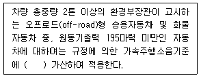
- 1dB(A)
- 2dB(A)
- 3dB(A)
- 4dB(A)
(정답률: 30%)
88. 환경정책기본법령상 일반지역 중 전용주거지역의 낮시간대 소음환경기준으로 옳은 것은?
- 40 Leq dB(A)
- 45 Leq dB(A)
- 50 Leq dB(A)
- 55 Leq dB(A)
(정답률: 46%)
89. 소음진동관리 법규상 소음방지시설(기준)에 해당하지 않는 것은?
- 소음기
- 방음벽시설
- 방음내피시설
- 흡음장치 및 시설
(정답률: 50%)
90. 소음진동관리법령상 환경부장관이 소음진동관리를 위해 “대통령령으로 정하는 사항”으로 관계기관의 협조를 구할 때 그 대상사항으로 가장 거리가 먼 것은?
- 도로의 구조개선 및 정비
- 소음지도의 작성에 필요한 자료의 제출
- 소음·진동의 상시 측정망 설치 인증생략
- 교통신포체제의 개선 등 교통소음을 줄이기 위하여 필요한 사항
(정답률: 35%)
91. 환경정책기본법령상 낮시간대 전용공업지역의 소음환경 기준은? (단, 지역구분은 일반 지역에 한한다.)
- 50 Leq dB(A)
- 55 Leq dB(A)
- 65 Leq dB(A)
- 70 Leq dB(A)
(정답률: 35%)
92. 소음진동관리법규상 주간 철도소음관리기준(한도) 으로 옳은 것은? (단, 대상지역은 관광·휴양개발진흥지구, 단위는 (Leq dB(A))
- 60
- 65
- 70
- 75
(정답률: 24%)
93. 소음진동관리법규상 방진시설이 아닌 것은? (단, 그 밖의 사항 등은 제외)
- 탄성지지시설
- 공진지지시설
- 방진구시설
- 배관진동 절연장치
(정답률: 44%)
94. 소음진동관리법상 교통기관 등으로부터 발생하는 소음을 적정하게 관리하기 위한 소음지도의 작성에 관한 사항으로 거리가 먼 것은?
- 환경부장관 또는 시·도지사는 소음지도를 작성한 경우에는 인터넷 홈페이지 등을 통하여 이를 공개할 수 있다.
- 환경부장관은 소음지도를 작성하는 시·도지사에 대하여는 소음지도 작성·운영에 필요한 기술적 지원을 할 수 있다.
- 환경부장관은 소음지도를 작성하는 시·도지사에 대하여는 소음지도 작성·운영에 필요한 재정적 지원을 할 수 있다.
- 환경부장관은 소음을 적정하게 관리하기 위하여 대통령령으로 정하는 바에 따라 소음지도를 작성한다.
(정답률: 35%)
95. 소음진동관리법규상 자동차의 사용정지 명령을 받은 차량의 소유자는 사용정지표지를 자동차의 어느 부위에 부착해야 하는가?
- 전면 유리창 왼쪽 상단
- 전면 유리창 오른쪽상단
- 전면 유리창 왼쪽 하단
- 전면 유리창 오른쪽 하단
(정답률: 53%)
96. 소음진동관리법규상 환경부장관이 확인검사대행자의 등록을 위해 확인검사에 필요한 검사수수료를 정하여 고시할 때, 환경부의 인터넷 홈페이지에 며칠간 그 내용을 게시하고 이해관계인의 의견을 들어야 하는가? (단, 긴급한 사유가 아닌 경우임)
- 7일
- 14일
- 20일
- 60일
(정답률: 48%)
97. 소음진동관리법규상 특정공사의 사전신고대상 기계·장비의 종류로 옳지 않은 것은?
- 로더
- 압입식 항타항발기
- 콘크리트 펌프
- 콘크리트 절단기
(정답률: 55%)
98. 소음진동관리법규상 22.5kW 이상의 시설로서 진동배출시설 기준에 해당하지 않는 것은? (단, 동력을 사용하는 시설 및 기계·기구로 한정)
- 분쇄기 (파쇄기와 마쇄기를 포한한다)
- 목재가공기계
- 연탄제조용 윤전기
- 단조기
(정답률: 44%)
99. 소음진동관리법규상 배출시설의 변경신고를 하여야 하는 규모기 준으로 옳은 것은?
- 배출시설의 규모를 100분의 50 이상 (신고 또는 변경신고를 하거나 허가를 받은 규모를 증설하는 누계를 말한다) 증설하는 경우
- 배출시설의 규모를 100분의 30 이상 (신고 또는 변경신고를 하거나 허가를 받은 규모를 증설하는 누계를 말한다) 증설하는 경우
- 배출시설의 규모를 100분의 25 이상 (신고 또는 변경신고를 하거나 허가를 받은 규모를 증설하는 누계를 말한다) 증설하는 경우
- 배출시설의 규모를 100분의 20 이상 (신고 또는 변경신고를 하거나 허가를 받은 규모를 증설하는 누계를 말한다) 증설하는 경우
(정답률: 57%)
100. 소음진동관리법규상 소음발생건설기계의 종류 중 공기압축기의 기준으로 옳은 것은?
- 공기토출량이 분당 2.83세제곱미터 이상의 이동식인 것으로 한정한다.
- 공기토출량이 시간당 2.83세제곱미터 이상의 이동식인 것으로 한정한다.
- 공기토출량이 분당 2.83세제곱미터 이상의 고정식인 것으로 한정한다.
- 공기토출량이 시간당 2.83세제곱미터 이상의 고정식인 것으로 한정한다.
(정답률: 60%)